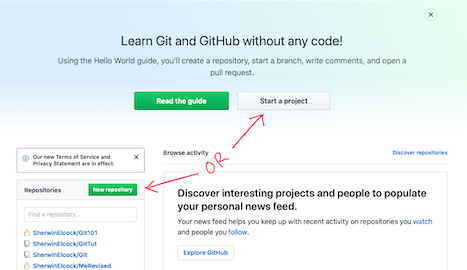
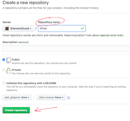

This will get you up and running.
Here's some vocab you'll need.
If you're creating the new project on your local machine, we have to make it a git repo.
I use terminal, it's a breeze.
Go to the directory you want to save the project and run:
git init
Go to your GitHub page and click the New Repository button.
Give it a name, description, select either public or private, I always check the box to, "Initialize this repository with a README"
Click, "Create repository" button.
It'll take you to the repository. You'll have one file a "README.md". It'll show initial commit with how long ago and your description will display.
Now we need to clone this repo to our local machine.
Click the button to, "Clone or download" and copy the url.
Back to terminal:
git clone < the url you copied >
You should get a message showing:
remote: Counting objects: 3, done.
remote: Total 3 (delta 0), reused 0 (delta 0), pack-reused 0
Unpacking objects: 100% (3/3), done.
You can jump into that directory. You will now see a git folder that you can expand and see its contents, also you have your README file.
What files? The files you tell it to.
git add < filename >
OR
git add .
This will add everything that's changed and any new files that have not been tracked yet.
git commit -m "Message about what are you committing"
- If you forget to add the message, you will get taken to the VI editor with the chance to input. If you're not familiar with it, .
Input a colon and then q!.
When you have time, you should definitely check out this site.
To work on something before merging into master branch we create and checkout a branch.
Let's do this...
git checkout -b < your branch name >
This creates a new branch and moves you to it.
You can check what branch you're on with:
git status
OR
git branch
Make your changes, then we have to...
git add .
And then...
git commit -m < "your message" >
We have to push our changes, send those suckers to the remote repository.
git push origin < branch you want to push changes to >
Back to github.
You'll now see you have a pull request.
Click the create pull request button.
*Usually this would be for someone else to review your changes and ensure they want to implement.
In our case, you can click the merge pull request button, then confirm it.
You'll get message that the, "Pull request successfully merge and closed."
You can delete the branch now, or wait.
At the top of the window, you'll have a message that says, "Merged NAME merged 1 commit into master from BRANCH just now"
Nice! You've just merged your changes into the repo.
Go to the file you just changed on Git, you'll see the updates.
You should also now have your 2 branches. This is the sweet spot. You can go back to those at any time and branch again.
Stop saving myfile1, myfile2, myfile873!
Their have been changes to your repo. We need to update our local repository.
git pull